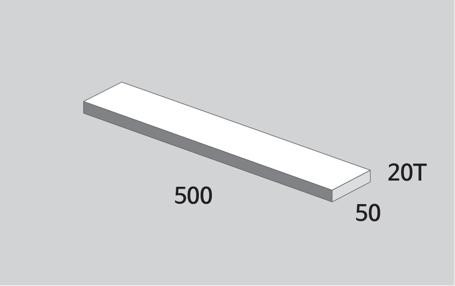
와이드 500 타일
- 규격
- 500 × 50 × 20T
- 1㎡당
- 28장
- 박스 포장
- 21장 / Box
- 1팔레트
- 54㎡
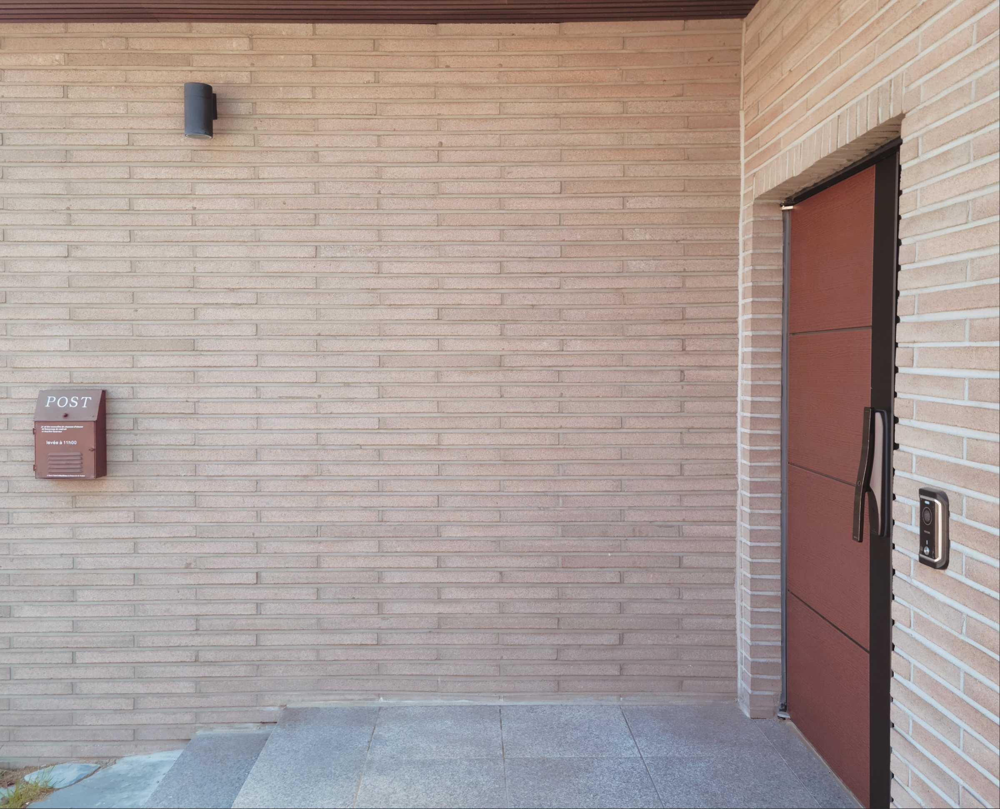
얇고 세련되게 · 500 · 390 × 50 × 20 mm
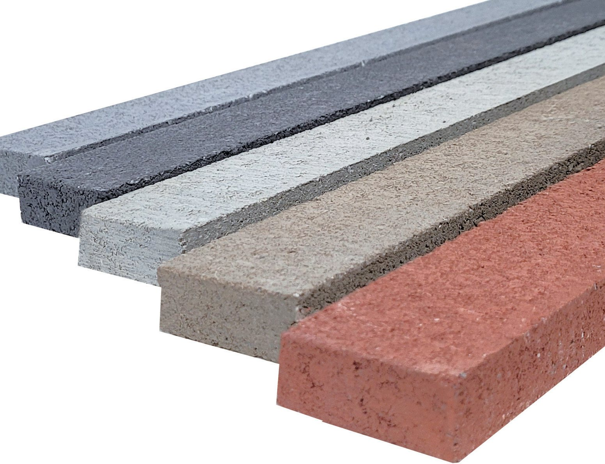
와이드타일은 넓은 폭과 긴 길이로 제작해 건축물의 외벽과 다양한 마감면에 적용할 수 있는 콘크리트 마감재입니다.
일반 타일보다 넓은 면적을 효율적으로 마감할 수 있으며, 와이드벽돌과 동일한 소재와 색상으로 제작해 제품 간 통일된 외관을 구성할 수 있습니다.
길이 500과 390 두 종류가 있으며, 두 길이에 함께 쓰는 코너타일이 있습니다.

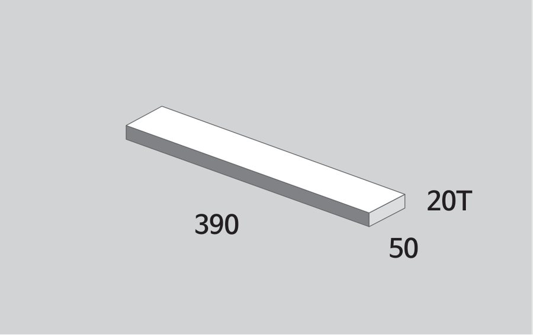
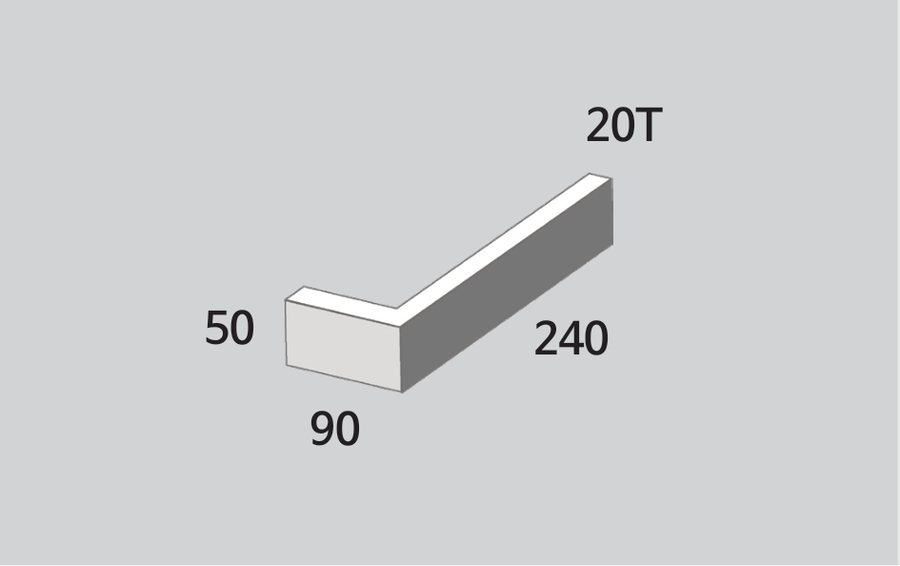
앞 · 뒤가 동일하게 제작되어 In-Corner · Out-Corner에 모두 시공할 수 있습니다.
2026 카탈로그 기준입니다. 정확한 최신 규격과 수량은 카탈로그로 확인해 주세요.
와이드벽돌과 같은 색상으로 만들어, 벽돌과 타일을 함께 써도 외관이 이어집니다.
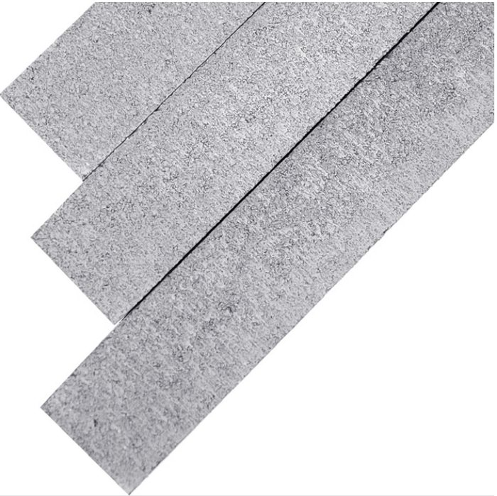
매직그레이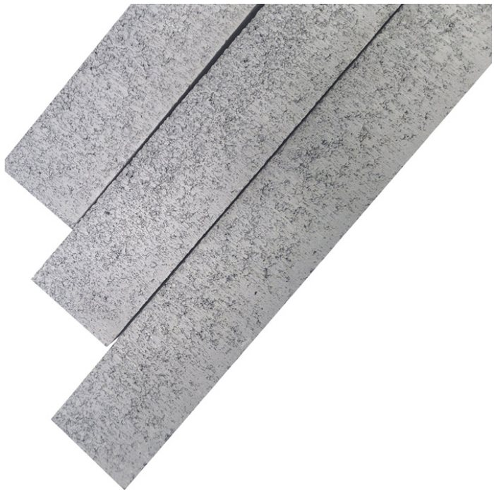
베이비블랙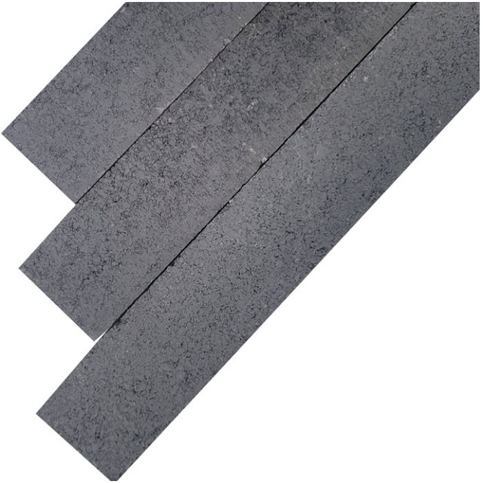
매직블랙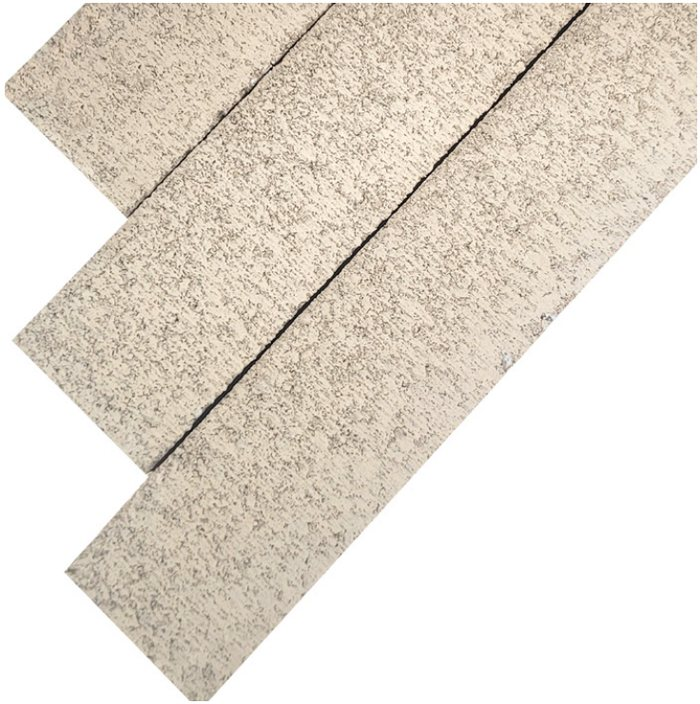
베이비브라운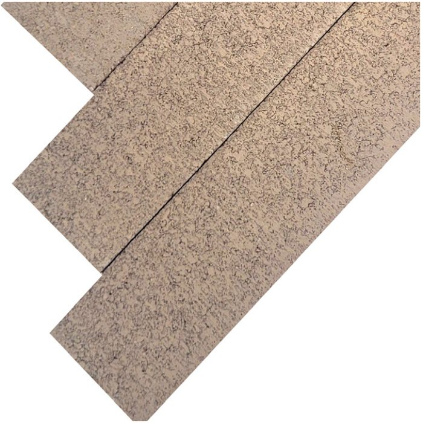
매직브라운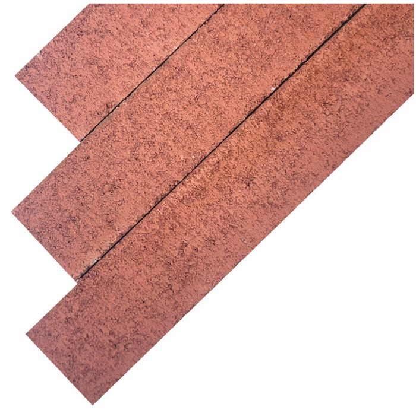
매직레드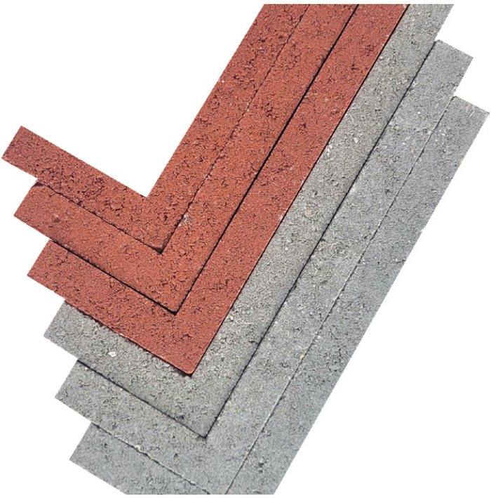
코너타일In · Out 코너 공용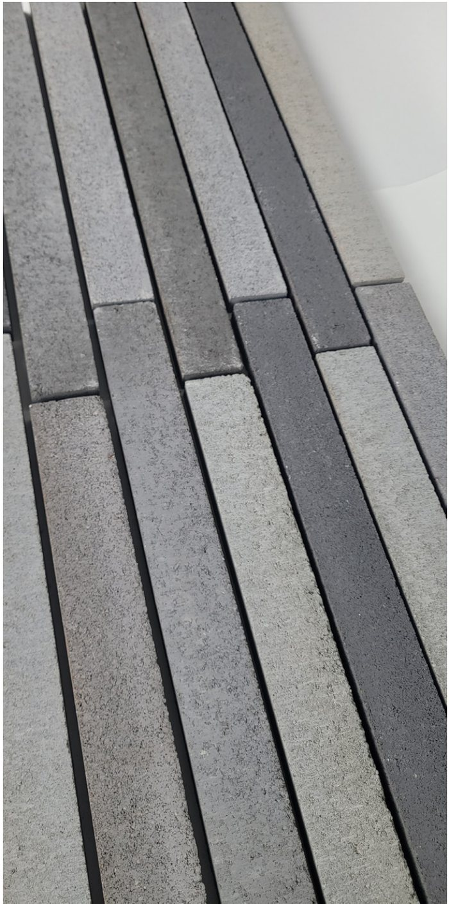
Mix여러 색을 섞은 조합색상표에는 매직그린 · 옐로우도 있습니다. 화면 색은 실제와 다를 수 있으니 실물 샘플로 확인해 주세요.
두 제품은 같은 소재와 색상으로 만들어, 현장 조건에 맞춰 고르거나 함께 쓸 수 있습니다.
| 현장 조건 | 검토 제품 |
|---|---|
| 조적(쌓기)으로 외벽을 마감할 때 | 와이드벽돌 — 500 · 390 · 340 · 300mm |
| 얇은 마감이 필요하거나, 벽돌 적용이 어려운 모서리 · 부분 마감 | 와이드타일 — 500 · 390mm + 코너타일 |
시공 방법은 현장 조건에 따라 달라집니다. 도면을 보내주시면 함께 검토합니다.
타일로 마감한 실제 현장입니다
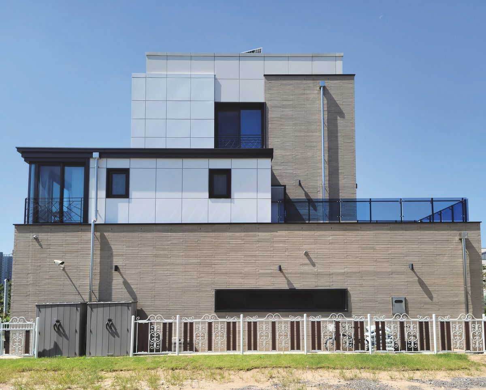
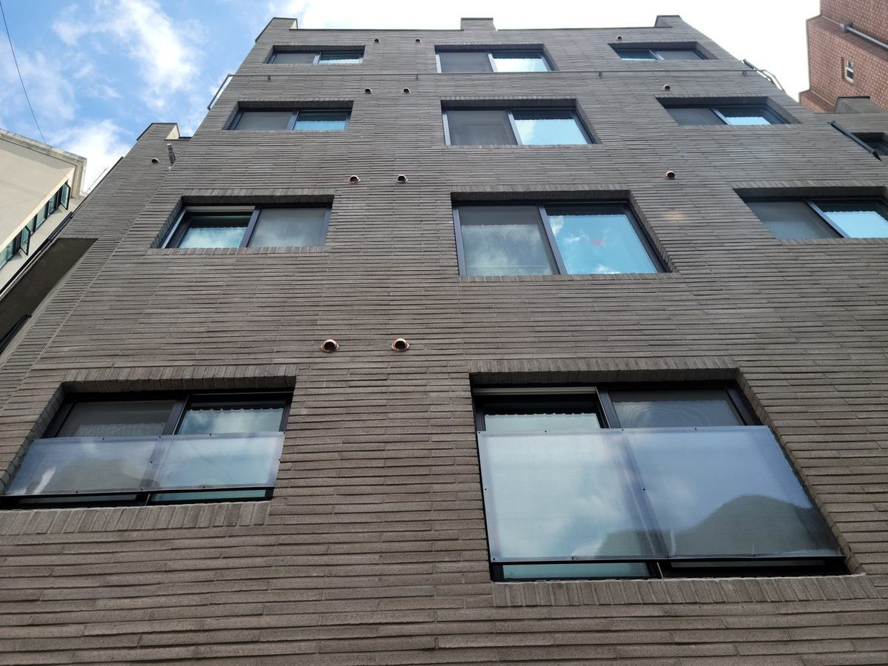
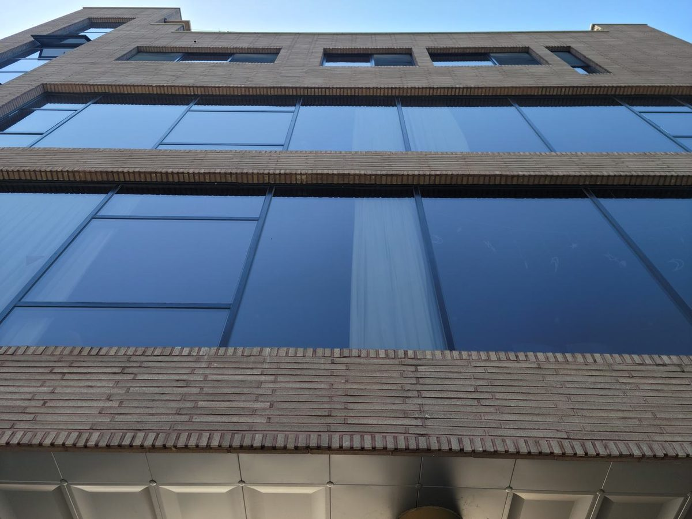
현장 조건을 알려주시면 맞는 시공 방식을 함께 검토합니다